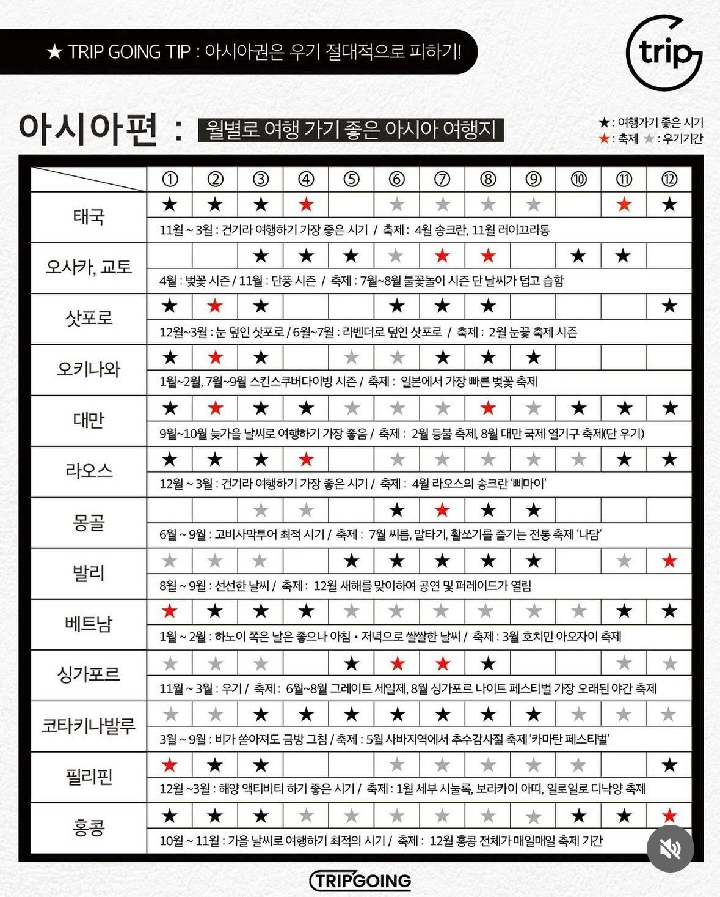

etc · 사진 · 2026-11-24
월별로 여행 가기 좋은 여행지 (아시아편)
트립고잉이 태국·일본·대만·동남아·몽골 등 아시아 13개 여행지의 월별 여행 적기, 축제, 우기 기간을 한 장의 표로 정리했다.

- 아시아권 여행은 우기를 반드시 피하는 것이 좋다는 팁을 제시한다.
- 태국과 라오스는 12월(태국은 11월)부터 3월까지가 건기라 여행하기 가장 좋으며, 4월에는 송크란 축제가 열린다.
- 오사카·교토는 4월 벚꽃, 11월 단풍 시즌이 좋고, 7~8월 불꽃놀이 시즌은 덥고 습하다.
- 삿포로는 12~3월 설경과 2월 눈꽃 축제, 6~7월 라벤더가 볼거리이다.
- 몽골은 6~9월이 고비사막 투어 최적기이며 7월에 전통 축제 '나담'이 열린다.
- 발리는 8~9월이 선선하고, 코타키나발루는 3~9월에 비가 와도 금방 그친다.
- 홍콩은 10~11월이 가을 날씨로 최적이며, 싱가포르는 11~3월이 우기이다.